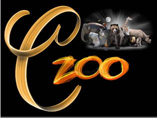

historias

CRUZOO
¡BiENVENIDO A EL ZOOLOGÍCO!
1. Animales oceanicos
2. Animales Aereos
3. Animales terrestres de la selva
4. Animales terrestres del artico
5. Animales terrestres del desierto
6. Animales invertebrados
7. DATOS CURIOSOS
Este es uno de los mejores Zoologicos del mundo, mas conocidos por su divercidad de ecosistemas al igual que de animales de distintas especies e historias, como algunas a continuacion
Jirafa

GEORGINA.
Georgina es una jirafa quien fue encontrada herida a la salida de la selva tropical, el equipo de salvacion del zoolgico fue, quienes ayudaron a transportar a esta gigantesca de 4.0m de altura en un contenedor, donde es necesario apoyar la cabeza de la jirafa a una cierta altura con el fin de evitar una hemorragia cerebral. Para lograr el traslado es necesario un entrenamiento previo (20 días), de acondicionamiento al contenedor y al remolque, donde se les da de comer para acostumbrar al animal al trayecto. Fue atendido en la sala especial para animales grandes, y se le acondiciono el espacio para que estuviera comoda y a gusto con su nueva vivienda, se calcula que aproximadamente tenga 14 años
Leon Blanco

WHITE. White es un león blanco de especie unica, que sus padres abandonaron a su manada por conflictos dentro de ella olvidando a su cria de tan solo 2 meses de nacido. fue en contrado en una cueva escondido y tiritando del frio buscando refugio y alimentacion, el equipo de rescate fue en cuanto un granjero cercano llamo pidiendo ayuda para salvarlo. Se le dio los cuidados necesarios y se le acondociono un espacio a su comodidad y tranquilidad. Ahora tiene 6 años y es muy cariñoso con las personas quienes lo rescataron y cuidaron durante toda su vida.
Oso Polar

LOS SNOW. Los Snow son unos osos polares quienes por los cambios climaticos estaba sufriendo un gran desgaste de energia obligandose a recorrer grandes distancias donde su temperatura sea la indicada y para buscar comida y sobrevivir, concientizar a la gente es a muy dificil, y mientras lo hacemos dandoles a conocer lo espectacular que es la naturaleza decidimos resguardar a algunos osos polares que estan en peligro de extincion entre ellos estan estas pequeñas crias de 1 año de edad quienes fueron engendrados por su madre justo antes de morir.
Delfin

KARI Y COFFEE. Kari y Coffee son delfines que fueron rescatados de un pescador de trafico ilegal de animales acuaticos, recibieron los cuidados a decuados y se les acondiciono un habitad donde pudieran estar a salvo de todas estas cazas y ahora estan esperando ser padres, puesto a que 2 semnas despues de acondicionarles su espacio Kari quedo embarazada y tendra crias dentro de 10 a 12 meses.
Alcón Peregrino

OXFORD. Oxford es un alcon cria de una antepasada de el zoolgico quien lastimosamente murio hace 2 años por muerte natural. le enseño a Oxford todo lo que sabe incluso a volar y se le esta buscando compañia para evitar su desolacion y aburrimiento.
Cocodrilo

VEXLER. Vexler es un cocdrilo quien fue transferido a nuestro zoologico por invasion a zonas de civilizacion y daños, esto se debe a que las personas construyen donde no deben, ya que dañan el habitad de los animales. Para evitar mas daños, e incluso su muerte provocada por el susto de los residentes fue trnsportado a nuestro zoologico donde le acondicionamos su debido espacio y pueda moverse con tranquilidad
Caracol

DROKI.Droki es un Caracol que encontre al ir rumbo a mi casa que queda en la zona urbana, como saben y pueden deducir aquel no es un espacio acorde para un inocente e indefensivo insecto. Asi que lo cuide y lo lleve al zoologico con el resto de los insectos a un espacio mejor amabientado para su salud.
Camello

PUPPY. Puppy es una madre camello que estaba pasando por una fuerte deshidratacion pues los expertos afirman que sobrepasaron los dias que puede soportar un camello sin beber agua, pues en invierno aguanta hasta 50 días sin una gota y en verano, no más de 5. Si los superan, sus ojos se llenan de lágrimas, se niegan a pastar y mugen lamentos. Si un camello sediento huele agua, sale disparado y no oye, se encabrita y no se detiene, por eso fue hidratada por nuestro grupo de veterinarios salvandole asi la vida y dejando una madre para criar a sus hijos.
DATOS CURIOSOS
1. Las hormigas no duermen
2. Los elefantes pueden comunicarse
3. Los caballitos de mar machos son los que tienen a las crías
4. El león es muy activo sexualmente
5. La avutarda ingiere veneno para encontrar pareja
6. Las abejas, organizadas y útiles
7. El koala y su pasión por dormir
8. Los mosquitos tienen 47 dientes
9. Los toros son daltónicos
10. El caracol pasa un tercio de su vida durmiendo
11. El cocodrilo puede comer una vez al año
12. Las jirafas duermen 20 minutos
13. El orgasmo del cerdo dura 30 minutos
14. Los calamares tienen los ojos más grandes
15. La avispa parasitaria de Tanzania es el insecto más pequeño
para ver el video en el navegador entra a:
100 DATOS DE ANIMALES

| CLASIFICACION |
PECES |
AVES |
REPTILES |
ANFIBIOS |
MAMIFEROS |
INSECTOS |
| HABITAD |
Acuatico |
Aereos |
Terrestres o Acuaticos |
Terrestres pero viven en el Agua |
Terrestres o Acuaticos |
Aereos o terrestres |
| DESPLAZAMIENTO |
Nadan |
La Mayoria Vuelan |
Nadan o Caminan |
Nadan y Saltan |
Nadan, Caminan y Vuelan |
Vuelan, Caminan o se Arrastran |
| PIEL |
Cuerpo con Escamas |
Cuerpo con Plumas |
Cuerpo con Escamas y a veces con Caparazon |
Piel muy Fria y Humeda |
La mayoria tiene pelo en su cuerpo |
Exoesqueleto o Ectoesqueleto |
ALIMENTACION |
Carnivoros, Herbivoros u Omnivoros |
Carnivoros, Herbivoros u Omnivoros |
Carnivoros y Herbivoros |
Carnivoros |
Carnivoros, Herbivoros u Omnivoros |
Herbivoros, Carnivoros y Material en Descomposion |
| RESPIRACION |
Branquias |
Pulmones |
Pulmones |
Piel y Pulmones |
Pulmones |
Piel |
| REPRODUCCION |
Oviparas |
Oviparos |
La mayoria son Oviparas |
Oviparos |
Viviparos |
Oviparos |
ESPERO QUE VENGAS Y NOS VISTES, REGISTRATE Y NOS VEMOS PRONTO PARA CONOCER MAS HISTORIAS Y SU DIVERSIDAD.
¡Adquiere tus entradas para el zoolgico CRUZOO!